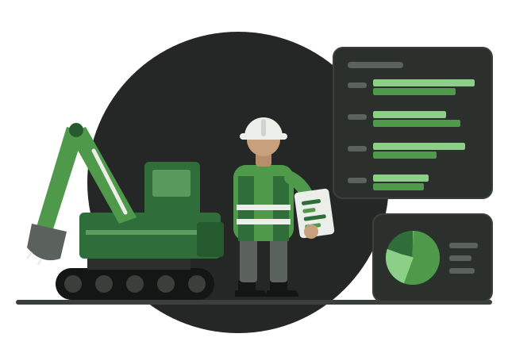

Your finance function, run by a hands-on controller.
Books closed by day 5, job margins you can trust, and a clear view of where your cash is. A fractional controller and finance team for trade and construction businesses.

-
Know your job margins.
Job costing, WIP, and percentage-of-completion you can trust. Every job is profitable until somebody does the math.
-
Books closed by day 5.
Month-end within 5 business days is included. Need it faster? Just ask.
-
Payroll and HR off your desk.
Payroll, onboarding, offboarding, benefits admin, and your 401(k), handled.
-
Fewer errors.
AI agents do the repetitive work: coding, matching, flagging. A controller reviews all of it before it reaches you.
Sound familiar?
- “Where did the cash go?” A forecast that shows what’s coming in and going out, before the crunch.
- “Are we making money on this job?” Job margins while the job is running, not a year after.
- “Did we bill that change order?” Change orders, progress billing, and retainage tracked and chased.
- “My banker wants numbers.” WIP schedules and financials ready for your bank or your surety.
- “What if my bookkeeper leaves?” Documented processes, so nothing lives in one person’s head.
How it works
-
Diagnostic and onboarding
We start with a short diagnostic: a look at your books and your jobs, and a straight answer on what’s broken. Then we get your books current and your jobs set up properly. How long that takes depends on how messy the books are, and our AI agents speed it up either way.
-
Systems
QuickBooks Online set up the way a contractor needs it, connected to the apps you already run: field service apps like ServiceTitan, Jobber, and Houzz Pro, and construction apps like Buildertrend, Contractor Foreman, and Procore.
-
Monthly service
Job costs, billing, reporting, payroll, and closing the books by day 5, plus a monthly call about your cash flow and your job margins.
Your crew gets paid on Friday. Your customer pays in 90 days.
Let’s talk about your cash flow and your job margins.